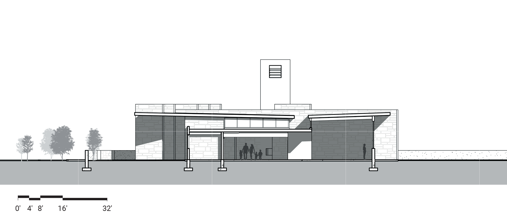
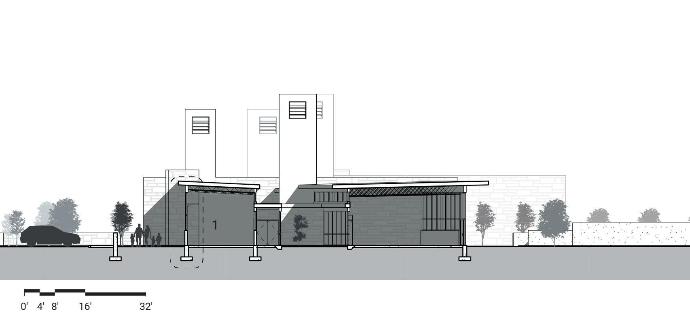
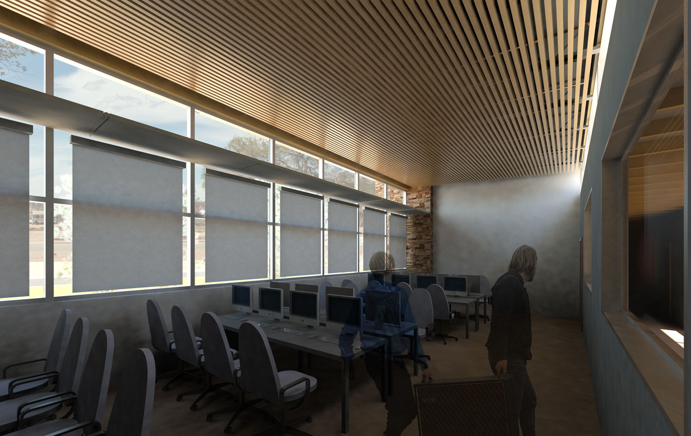
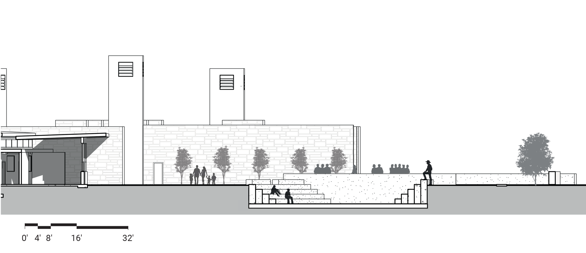
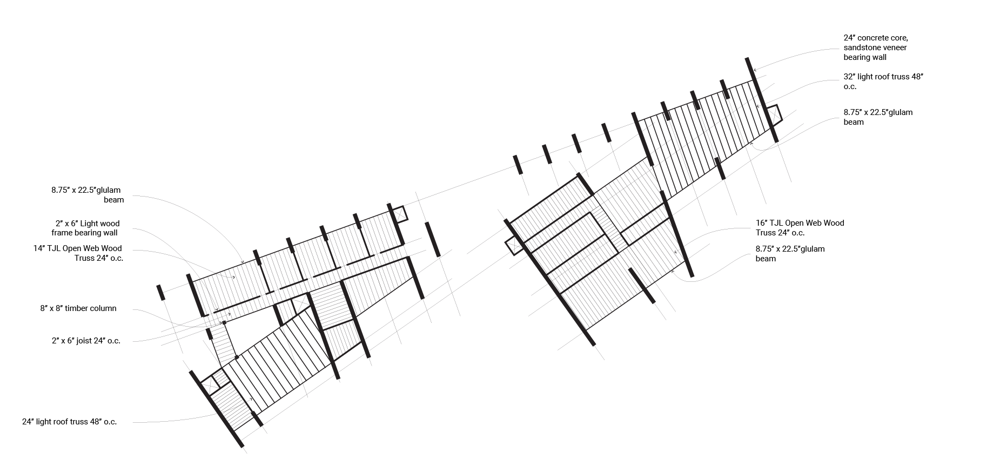
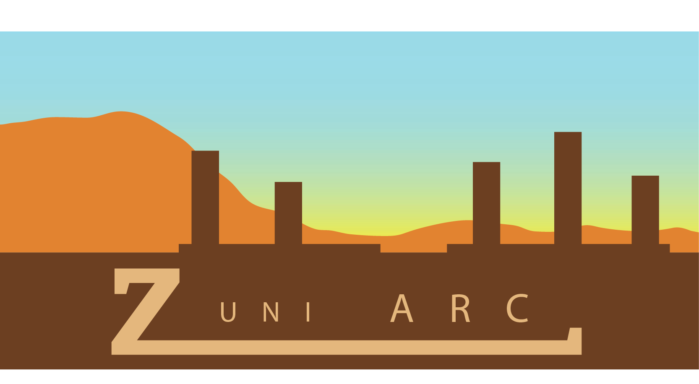
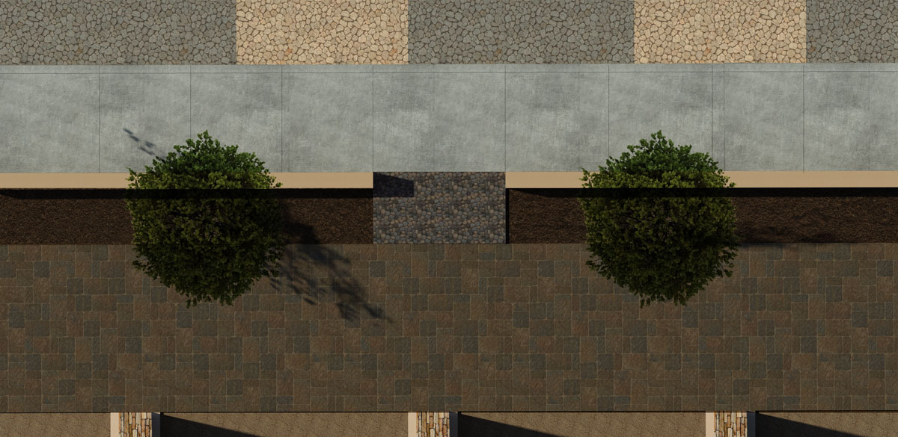

Zuni Pueblo is nestled deep in the high desert of New Mexico and Arizona and is home to the Zuni people. The Zuni have existed in the southwest region for centuries, where they have practiced traditions and held cultural values -- many of which last to this day.
Art, which takes many forms such as weaving, painting, and fetish carving among others, is an essential expression of Zuni culture. Artistic traditions are passed on through generations, forming a lineage that is rich in cultural significance. In addition, art is also a key economic force for the Zuni community.
Site Plan
The sale of handcrafted artwork is a primary source of income for many in the Zuni community. In order to better support the Zuni tradition of artistic expression and to engage regional and national markets, there is a need for an accessible community space that facilitates the sale of artwork and provides resources for Zuni artists.
In addition to fostering artistic tradition in the Zuni community the Zuni Artist Resource Center (ARC) should serve as a destination point for visitors and embody the cultural values of the Zuni people. These values include a commitment to community, self-sufficiency and energy independence, and a reverence for the landscape and cultural traditions.
The design of the Zuni ARC strengthens the presence of Main Street and enhances walkability through a bold street-facing edge and by providing wide, pleasantly landscaped sidewalks. Evaporative cool towers, Trombe walls, and thoughtful orientation provide alternative heating and cooling strategies that respond to the desire for self-sufficiency and energy independence.
Additionally, the primary building materials of sandstone and timber can be locally sourced. In response to Dowa Yalanne, a towering mesa that hold spiritual significance for the Zuni, the design orients primary views and places outdoor gathering areas toward the landscape.
Ground Floor Plan
Section A
Section B
 Section C
Framing Diagram
Marketing Imagery
Tactile Paving Regions - Plan View